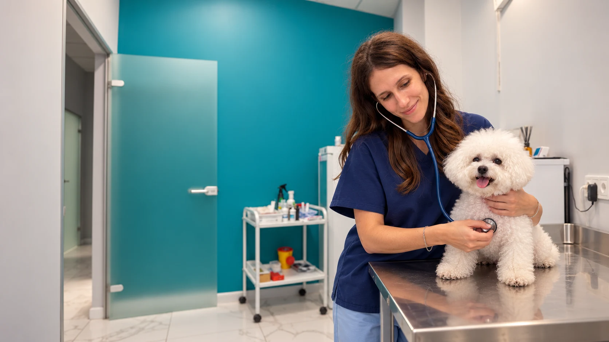

⚕
Подробнее →Терапия · приём круглосуточно
Терапия

Первичный приём терапевта1 800 ₽
Повторный приём терапевта1 000 ₽
Онлайн-консультация900 ₽
Консультация по результатам1 000 ₽
Первичный приёмПовторный приёмГастроэнтерологияИнфекционные болезниИнфузионная терапияСтационар